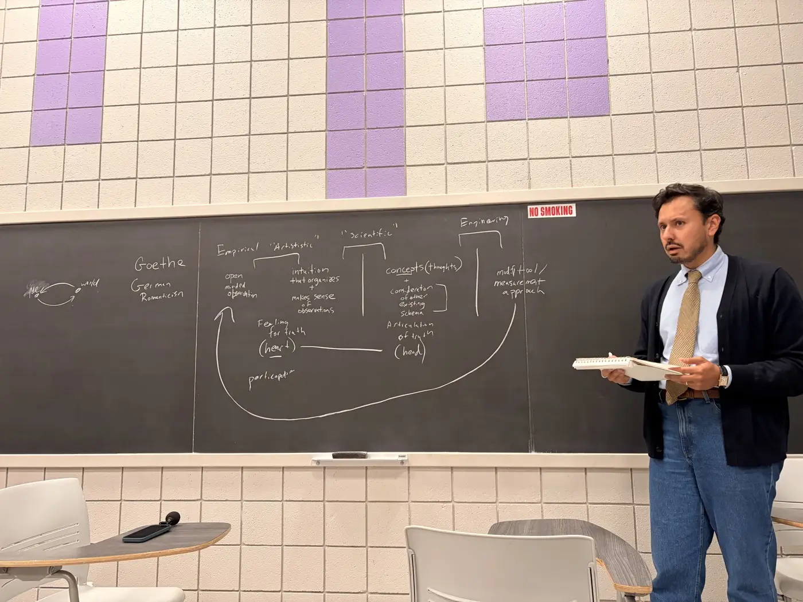
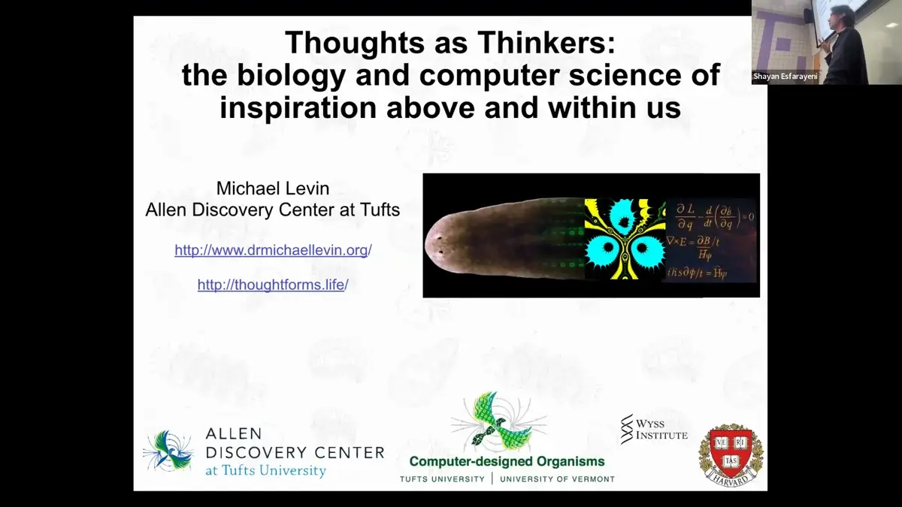

Science studies the world. We also study the one looking.
A research community asking how order arises without anyone in charge, in cells, minds and societies, using mathematics and trained attention.
Since 2025 · about 150 people on our list · retreats in the Pyrenees, online conferences and a satellite at CCS26 · a monthly call open to all
Advisors: John Dunne (UW-Madison), Francis Heylighen (VUB) Speakers have included Michael Levin (Tufts) and Gary Lupyan (UW-Madison)
What we do

Open questions, worked on together
A review paper on a complexity theory of mindfulness (in preparation), a shared map of the field, and ongoing discussion of goals and contexts, and of causality in complex systems.
Research directions →
Meetings designed to think well
Week-long research retreats at INTP in the Pyrenees, a satellite session at the Complex Systems conference, and a monthly call.
Upcoming and past →
Things you can use
Recorded talks and films, proceedings, a questionnaire on how researchers come to know things, and Work Alive, an app that guides focused work as a practice.
Talks, films and tools →From the room
A findingAsked where an observer's influence is most underestimated, 6 of 10 answers pointed to the step before measurement: choosing what to study.
A feeling"I feel calm, unlike most conference days."
People
People and advisors →
Physicists, biologists, cognitive scientists, philosophers and anthropologists, many with long contemplative practice. The community is run by volunteers and is still young: its shape is being worked out in public.
Francis Heylighen complex systems, VUB
With INTP, Institut Natura e Teoria en Pirenèus · a satellite of CCS26, the Conference on Complex Systems
Why an ensō?
The brush-drawn circle stands for emptiness. In Buddhist thought, nothing exists on its own: everything arises from relations, which complexity science studies as networks of interaction out of which new order emerges. Drawn in one stroke and left open, the circle is an open system. And it points to silence as where understanding starts. Every theory after that is a model, useful and incomplete.
New to all this? Start with the vision, an animated introduction →Join the community
- One email a month: calls, gatherings, new talks and writing, research and funding openings
- A monthly call, open to anyone curious
- A forum with a member map